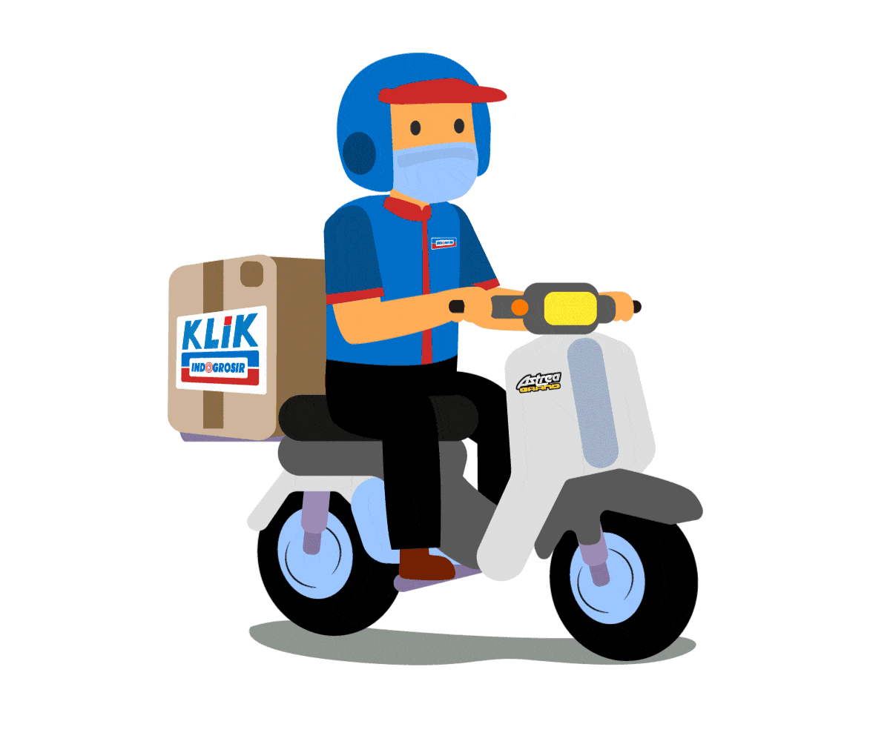

PRINT PRODUK SEGAR
Drag & Drop Gambar Di Sini
DISPLAY
Engine khusus untuk Indogrosir Design Team

SELAMAT DATANG - MARKETING INDOGROSIR - SUB DIVISI DESAIN GRAFIS

Drag & Drop Gambar Di Sini
Engine khusus untuk Indogrosir Design Team